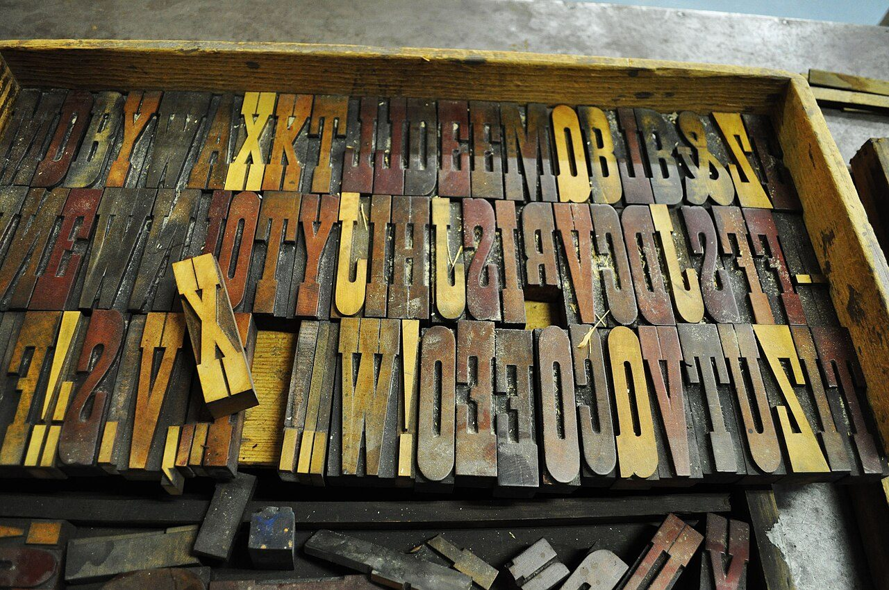

References / Typeface / 453
French Clarendon wood type
at the Hamilton museum
A tray of condensed French Clarendon wood letters, the reverse-contrast poster face with heavy slab serifs and thin stems that the Victorian bill used for names and slogans.
- Source
- Wikimedia Commons: French Clarendon wood type (photograph by Jessica Fiess-Hill)
- Creator
- Unknown wood type maker; photograph by Jessica Fiess-Hill
- Made
- Type undated; photographed 2009
- Style
- Victorian typography (agent-proposed, not yet reviewed by a person)
- Moods
- Crafted, nostalgic, heavy
- Evidence
- Inspected a 1280 × 850 px Commons thumbnail of the photograph (original 4288 × 2848 px), used instead of the original because Wikimedia returned HTTP 429. Commons says the type is at the Hamilton Wood Type Museum; no maker, date, or object number is given, so the font is unidentified.
- Reviewed
- Rights
- Open license, stored. License: CC-BY-2.0. Rights policy

Context
Commons describes the photograph as “French Clarendon wood type at the Hamilton Wood Type Museum, Wisconsin,” taken 8 November 2009 by Jessica Fiess-Hill.
Wikipedia lists the reverse-contrast or “French Clarendon” among the common wood type styles, with slab serif, fat face, sans-serif, Tuscan, and Grecian, and says Hamilton’s surviving materials are kept at the Hamilton Wood Type and Printing Museum in Two Rivers. Wikipedia: Wood type.
Observed
- A shallow wooden tray holds three rows of wood letters standing on end, with their faces mirrored as type is.
- The letters are condensed, with thin vertical stems and very heavy horizontal serifs and bars: the reverse-contrast pattern.
- Exclamation marks, figures, and an ampersand sit among the capitals.
- The faces carry old ink in yellow, red, brown, and black, and the wood grain shows through the worn surfaces.
- Loose letters and spacing material lie in the tray below.
Why it belongs
The tray explains a visual trait of the posters: the thick-and-thin was cut into wood, and the worn faces and grain are the reason big poster letters print unevenly.
Reverse contrast is one of the most recognisable Victorian letters, and it is almost absent from later design until Western and circus revivals.
Borrow
Use a reverse-contrast condensed face for names and dates on an event page.
Let large letters carry a little unevenness of ink, rather than a smooth vector fill.
Measured
Machine-extracted by tools/image-traits.py on . Full measurement.
- Mean chroma
- 0.13
- Palette
- #2f2f28 14%
- #090907 10%
- #1e1c16 7%
- #46463c 5%
- #535347 5%
- #777463 4%
- #646254 4%
- #a9a798 4%

